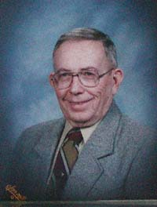
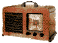

|
| Chronicler: Interviewer: Location: Date: |
Frank Oneida Mikel Chertudi Boise, Idaho 6 March 2002 |
|
 |
Frank was born in Shoshone, Idaho to Anastacio Oneida and
Violet Howard on 4 December, 1929. He remembers the history of his
family's immigration to the US beginning with his grandparents, who were
largely self-taught and determined to be successful in their new
surroundings. Frank's grandfather Anastacio (an accomplished accordion
player) began the Oneida Sheep Company in Shoshone, and Frank recalls
helping out and having fun with the operation. Grandmother Benita ran
a popular boarding house. Frank reflects carefully on growing up in a mixed Basque/non-Basque environment, in which his euskera skills diminished but his pride in the culture found new means of expression. He also recalls Shoshone society at the time, where immigrants from many different traditions lived together happily. While working at his lifelong career for the Transportation Department, Frank met his wife Mary Williams, a non-Basque who has nonetheless embraced the traditions and culture. He has 3 sons. Frank Oneida identifies himself strongly as a Basque, but is also proud of his American citizenship, having served in the Korean War. Frank has not visited Euskadi, but enjoys attending Basque cultural events in his own country. He remains involved in multiple activities, including theater and square dancing with his wife. |
| Frank Oneida | Read the interview summary |
|  | Grandfather's Accordion (1:43) |
Grandparents Onaindia (c. 1950) Grandparents' Golden Anniversary (1955) Father Anastacio at Palace Pool Hall (1956) |
|
| Copyright © 2001
Basque Museum & Cultural Center, Boise, Idaho USA All rights reserved. Webpage designed by Lisa Corcostegui, Center for Basque Studies, Reno, Nevada USA |